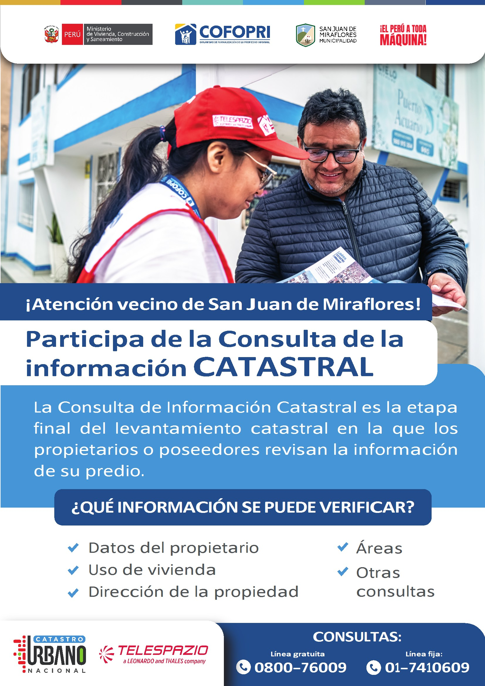

Creación del Servicio de Catastro Urbano en Distritos Priorizados de las Provincias de Chiclayo y Lambayeque del Departamento de Lambayeque; la Provincia de Lima del Departamento de Lima, la Provincia de Piura del Departamento de Piura
Levantamiento Catastral Urbano Lote 5 (Villa El Salvador, Chorrillos y San Juan de Miraflores)
